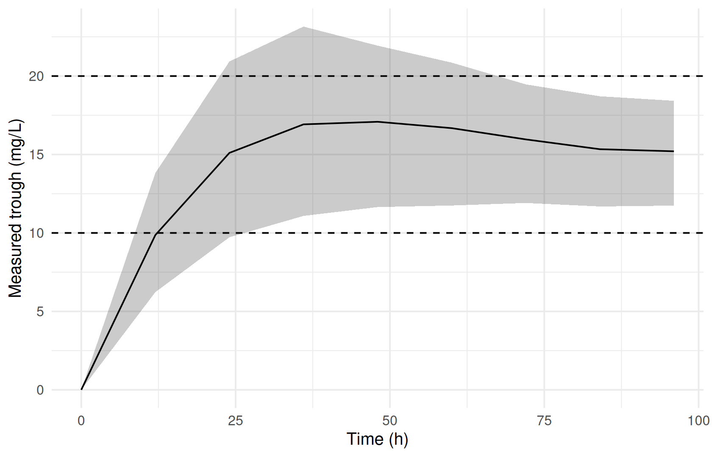
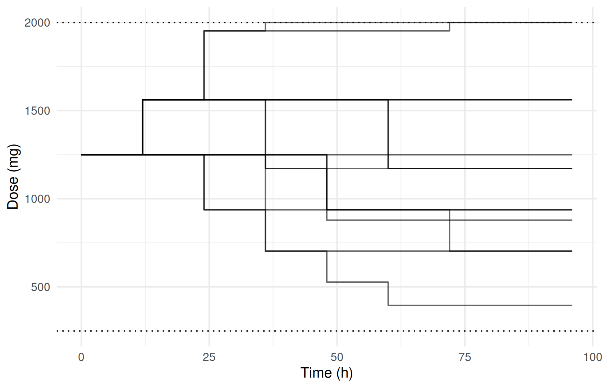

ex <- ferx_example("adaptive_tdm")
ferx_model_show(ex$model)
#> # model: adaptive_tdm.ferx
#> # Adaptive (feedback) dosing -- TDM trough titration (epic #391)
#> #
#> # A vancomycin-style therapeutic-drug-monitoring (TDM) example: the dose is
#> # titrated every 12 h to drive the measured pre-dose trough concentration into a
#> # 10-20 mg/L window. This is a *declarative dosing policy* -- the next dose
#> # depends on the simulated, assay-noised state -- so it is run with
#> # ferx_simulate_adaptive(), not the plain forward ferx_simulate().
#> #
#> # 1-compartment IV model; the observed/predicted endpoint is the concentration
#> # C = central / V (mg/L). The controller titrates on the *measured* trough
#> # (with_assay_error = true), as a clinician would, so the proportional assay
#> # error feeds each decision.
#>
#> [parameters]
#> theta TVCL(4.0, 0.5, 20.0) # clearance (L/h)
#> theta TVV(50.0, 5.0, 200.0) # volume of distribution (L)
#>
#> omega ETA_CL ~ 0.09 # between-subject variability on CL (log-normal)
#>
#> sigma PROP ~ 0.10 (sd) # proportional assay error (10% CV)
#>
#> [individual_parameters]
#> CL = TVCL * exp(ETA_CL)
#> V = TVV
#>
#> [structural_model]
#> ode(states=[central])
#>
#> [odes]
#> # central: drug amount (mg); concentration C = central / V (mg/L)
#> d/dt(central) = -(CL / V) * central
#>
#> [scaling]
#> y = central / V # observed/predicted endpoint is concentration
#>
#> [error_model]
#> DV ~ proportional(PROP)
#>
#> [adaptive_dosing]
#> with_assay_error = true # titrate on the *measured* trough (assay-noised)
#> assay_cmt = 1 # output #1 -- the concentration (y = central/V) + its proportional error
#> at = every 12 from 0 to 96 # a TDM decision before each q12h dose
#> start_dose = 1000 # initial dose (mg)
#> route = infuse(cmt=1, over=1) # 1-hour IV infusion
#> dose_bounds = [250, 2000] # never below 250 or above 2000 mg
#> target_window = [10, 20] # reported attainment band (mg/L); feeds the PCT_TIME_IN_WINDOW metric only, never dosing
#> confirm = 1 # act on the first breach
#> when signal < 10 : increase 25% # sub-therapeutic trough -> escalate
#> when signal > 20 : decrease 25% # supra-therapeutic trough -> de-escalateAdaptive dosing and TDM strategies
WarningMaturity: beta
ferx-core labels adaptive dosing beta: the feature is usable, but its syntax and outputs may still change. See feature maturity.
Where you are
In a regular simulation (Simulating scenarios) the dosing regimen is fixed in the dataset before the simulation starts. Therapeutic drug monitoring (TDM) and titration protocols do not work that way. The next dose depends on a measured level: if the trough is below 10 mg/L, increase the dose by 25%.
ferx simulates such protocols with a controller that you declare in the model file’s [adaptive_dosing] block. At each decision time the controller reads the simulated state of each virtual patient, applies the first matching rule, and issues the next dose. ferx_simulate_adaptive() runs the simulation and returns what happened: the concentrations, every decision, the doses given, and one summary row per virtual patient. With those outputs you can compare dosing strategies before using them.
This is simulation of a dosing policy under a population model. It does not estimate an individual patient’s parameters from their measured levels.
The data
The bundled adaptive_tdm example titrates a vancomycin-style IV infusion every 12 hours on the measured trough concentration:
The PK part is an ordinary one-compartment ODE model. The [adaptive_dosing] block is the dosing policy:
| Key in this model | What it does |
|---|---|
with_assay_error = true, assay_cmt = 1
|
Titrate on the measured concentration of output 1, including its residual (assay) error |
at = every 12 from 0 to 96 |
Decision times |
start_dose = 1000 |
Starting value of the running dose |
route = infuse(cmt=1, over=1) |
Each dose is a 1-hour infusion into compartment 1 |
dose_bounds = [250, 2000] |
Every dose is clamped to this range |
target_window = [10, 20] |
Band used only to report attainment; it does not affect dosing |
confirm = 1 |
Act on the first breach of a rule |
when signal < 10 : increase 25% |
Rules, evaluated top to bottom; the first match wins |
The block supports more than this example uses. observe = <expression> titrates on a latent, noise-free quantity instead of a measured one. levels defines a discrete dose ladder. auc_target reports exposure attainment. The hold and stop actions skip or discontinue dosing. All are specified on the ferx-core adaptive dosing page.
The dataset supplies only the patients and the observation grid. It contains no doses, because the controller issues all of them:
tdm_data <- read.csv(ex$data, na.strings = ".")
head(tdm_data, 10)
#> ID TIME DV EVID AMT CMT RATE MDV
#> 1 1 0 0 0 NA 1 0 0
#> 2 1 12 0 0 NA 1 0 0
#> 3 1 24 0 0 NA 1 0 0
#> 4 1 36 0 0 NA 1 0 0
#> 5 1 48 0 0 NA 1 0 0
#> 6 1 60 0 0 NA 1 0 0
#> 7 1 72 0 0 NA 1 0 0
#> 8 1 84 0 0 NA 1 0 0
#> 9 1 96 0 0 NA 1 0 0
#> 10 2 0 0 0 NA 1 0 0Minimal runnable call
Each of the 5 subjects in the dataset is simulated 200 times with fresh random effects, giving 1000 virtual patient runs.
Reading the result
The four data frames describe the same runs at different levels of detail. Follow one virtual patient (subject 1 in replicate 1) through them.
decisions has one row per decision time: the signal the controller read and what it did.
res$decisions |> filter(SIM == 1, ID == "1")
#> DRAW SIM ID DECISION TIME SIGNAL OUTCOME N_DOSED
#> 1 1 1 1 0 0 0.0000009259412 dosed 1
#> 2 1 1 1 1 12 4.7825015418872 dosed 1
#> 3 1 1 1 2 24 8.5653966169902 dosed 1
#> 4 1 1 1 3 36 12.0993771281923 dosed 1
#> 5 1 1 1 4 48 10.1906451173874 dosed 1
#> 6 1 1 1 5 60 10.9744200780901 dosed 1
#> 7 1 1 1 6 72 9.8335215498234 dosed 1
#> 8 1 1 1 7 84 10.5572865634468 dosed 1
#> 9 1 1 1 8 96 12.3888519377360 dosed 1doses is the dose ledger. It records the amount given, the signal and the rule that fired. When no rule matches, the running dose is given again and RULE shows the route (here infuse).
res$doses |> filter(SIM == 1, ID == "1") |> select(TIME, AMT, RATE, SIGNAL, RULE)
#> TIME AMT RATE SIGNAL RULE
#> 1 0 1250.000 1250.000 0.0000009259412 signal < 10 : increase 25%
#> 2 12 1562.500 1562.500 4.7825015418872 signal < 10 : increase 25%
#> 3 24 1953.125 1953.125 8.5653966169902 signal < 10 : increase 25%
#> 4 36 1953.125 1953.125 12.0993771281923 infuse
#> 5 48 1953.125 1953.125 10.1906451173874 infuse
#> 6 60 1953.125 1953.125 10.9744200780901 infuse
#> 7 72 2000.000 2000.000 9.8335215498234 signal < 10 : increase 25%
#> 8 84 2000.000 2000.000 10.5572865634468 infuse
#> 9 96 2000.000 2000.000 12.3888519377360 infuseThe first dose is already 1250 mg rather than the start_dose of 1000 mg. At the first decision (time 0) no drug has been given, so the trough is zero and the rule signal < 10 : increase 25% fires immediately.
trajectories holds the simulated concentrations on the dataset’s observation grid, in the same layout as ferx_simulate() output:
res$trajectories |> filter(SIM == 1, ID == "1")
#> DRAW SIM ID TIME CMT IPRED DV_SIM OBSERVED
#> 1 1 1 1 0 1 0.000000 0.000000 NaN
#> 2 1 1 1 12 1 5.496931 5.496931 NaN
#> 3 1 1 1 24 1 8.001926 8.001926 NaN
#> 4 1 1 1 36 1 10.235014 10.235014 NaN
#> 5 1 1 1 48 1 10.694378 10.694378 NaN
#> 6 1 1 1 60 1 10.788873 10.788873 NaN
#> 7 1 1 1 72 1 10.808311 10.808311 NaN
#> 8 1 1 1 84 1 11.018445 11.018445 NaN
#> 9 1 1 1 96 1 11.061671 11.061671 NaNmetrics has one row per virtual patient run, summarising the whole course:
head(res$metrics)
#> DRAW SIM ID CUM_DOSE N_DOSES N_INCREASES N_DECREASES N_HOLDS DISCONTINUED
#> 1 1 1 1 16625.000 9 3 0 0 FALSE
#> 2 1 1 2 13750.000 9 1 0 0 FALSE
#> 3 1 1 3 9941.406 9 1 2 0 FALSE
#> 4 1 1 4 9687.500 9 0 1 0 FALSE
#> 5 1 1 5 7656.250 9 0 2 0 FALSE
#> 6 1 2 1 16765.625 9 3 0 0 FALSE
#> TIME_TO_DISCONT SIGNAL_MIN SIGNAL_MAX SIGNAL_MEAN PCT_TIME_IN_WINDOW
#> 1 NA 0.0000009259412 12.38885 8.821333 0.5555556
#> 2 NA 0.0000003089598 14.60541 11.210371 0.7777778
#> 3 NA -0.0000008515341 20.61276 12.971918 0.5555556
#> 4 NA 0.0000005740543 23.54097 15.971713 0.7777778
#> 5 NA 0.0000001870968 22.88120 13.327168 0.6666667
#> 6 NA 0.0000003473591 11.04271 7.755079 0.2222222PCT_TIME_IN_WINDOW is the fraction (between 0 and 1) of that patient’s decisions at which the signal was inside target_window. CUM_DOSE and N_DOSES count the controller’s doses.
Summaries across all runs show how the policy performs in the population. The trough at each decision time:
res$decisions |>
group_by(TIME) |>
summarise(p10 = quantile(SIGNAL, 0.1), p50 = median(SIGNAL), p90 = quantile(SIGNAL, 0.9)) |>
ggplot(aes(TIME, p50)) +
geom_ribbon(aes(ymin = p10, ymax = p90), alpha = 0.25) +
geom_line() +
geom_hline(yintercept = c(10, 20), linetype = "dashed") +
labs(x = "Time (h)", y = "Measured trough (mg/L)")
And the dose each patient ended up on:
res$doses |>
filter(SIM <= 3) |>
ggplot(aes(TIME, AMT, group = interaction(SIM, ID))) +
geom_step(alpha = 0.6) +
geom_hline(yintercept = c(250, 2000), linetype = "dotted") +
labs(x = "Time (h)", y = "Dose (mg)")
Over all runs, the mean fraction of decisions in the target window is 0.692, and the mean cumulative dose is 11610 mg.
Options that matter
| Argument | Default | Meaning |
|---|---|---|
model |
— | Model file; it must contain an [adaptive_dosing] block |
data |
NULL |
Dataset with subjects, observation grid, covariates and optionally base doses. When NULL, the model’s [data] block is used |
n_sim |
1 |
Replicates per subject |
seed |
42 |
Random seed |
verify |
TRUE |
After each run, replay the realized doses through the standard simulation engine and stop with an error if the result diverges |
max_decisions |
0 |
Upper limit on decision points per run (a runaway guard); 0 keeps the engine default |
max_decisions is a safety limit, not a way to shorten the schedule. A schedule with more decision points than the limit stops with an error:
try(ferx_simulate_adaptive(ex$model, ex$data, n_sim = 1, seed = 1, max_decisions = 3))
#> Error in ferx_rust_simulate_adaptive(model_path = normalizePath(model), :
#> ferx_simulate_adaptive: subject '1' (sim 1): decision schedule has 9 points, exceeding max_decisions = 3 (runaway guard); raise `max_decisions` in the simulate options if the schedule is intentionalA model without an [adaptive_dosing] block is rejected with an error as well. Use ferx_simulate() for fixed regimens.
Variants
Comparing two dosing strategies
The main use of adaptive simulation is comparing policies. Here is a more aggressive version of the same protocol, which changes the dose in 50% steps instead of 25%. Edit a copy of the model: ferx_model_set_section() edits a file path in place, and the example model lives inside the installed package.
strategy_dir <- book_tempdir("adaptive-strategies")
aggressive <- file.path(strategy_dir, "adaptive_tdm_aggressive.ferx")
invisible(file.copy(ex$model, aggressive, overwrite = TRUE))
rules <- ferx_model_get_section(ex$model, "adaptive_dosing")
#> # [adaptive_dosing]
#> with_assay_error = true # titrate on the *measured* trough (assay-noised)
#> assay_cmt = 1 # output #1 -- the concentration (y = central/V) + its proportional error
#> at = every 12 from 0 to 96 # a TDM decision before each q12h dose
#> start_dose = 1000 # initial dose (mg)
#> route = infuse(cmt=1, over=1) # 1-hour IV infusion
#> dose_bounds = [250, 2000] # never below 250 or above 2000 mg
#> target_window = [10, 20] # reported attainment band (mg/L); feeds the PCT_TIME_IN_WINDOW metric only, never dosing
#> confirm = 1 # act on the first breach
#> when signal < 10 : increase 25% # sub-therapeutic trough -> escalate
#> when signal > 20 : decrease 25% # supra-therapeutic trough -> de-escalate
rules <- sub("increase 25%", "increase 50%", rules, fixed = TRUE)
rules <- sub("decrease 25%", "decrease 50%", rules, fixed = TRUE)
ferx_model_set_section(aggressive, "adaptive_dosing", rules)Simulate both strategies with the same seed and compare the per-patient metrics:
res_aggressive <- ferx_simulate_adaptive(aggressive, ex$data, n_sim = n_sim, seed = 1)
bind_rows(
`25% steps` = res$metrics,
`50% steps` = res_aggressive$metrics,
.id = "strategy"
) |>
group_by(strategy) |>
summarise(
`mean fraction in window` = mean(PCT_TIME_IN_WINDOW),
`mean cumulative dose (mg)` = mean(CUM_DOSE),
`mean increases` = mean(N_INCREASES),
`mean decreases` = mean(N_DECREASES)
) |>
gt::gt() |>
gt::fmt_number(columns = -strategy, decimals = 2)| strategy | mean fraction in window | mean cumulative dose (mg) | mean increases | mean decreases |
|---|---|---|---|---|
| 25% steps | 0.69 | 11,609.68 | 0.72 | 0.91 |
| 50% steps | 0.71 | 11,504.47 | 0.56 | 0.83 |
A loading dose followed by titration
A dataset can also carry a base regimen: ordinary dose rows that the controller adds its own doses to. adaptive_vanco_loading gives one typical patient a 1500 mg loading dose at time 0 and titrates daily maintenance boluses from 24 h. It titrates on the latent concentration, using observe rather than an assay-noised measurement:
ex_load <- ferx_example("adaptive_vanco_loading")
ferx_model_get_section(ex_load$model, "adaptive_dosing")
#> # [adaptive_dosing]
#> observe = CENT / V # titrate on the latent trough concentration
#> at = every 24 from 24 to 144 # daily MAINTENANCE decisions, after the load
#> start_dose = 750 # empiric maintenance start (mg): subtherapeutic
#> route = bolus(cmt=1) # maintenance boluses into the drug compartment
#> dose_bounds = [250, 4000] # mg
#> target_window = [10, 15] # report % of days with trough in [10, 15] mg/L
#> when signal < 10 : increase 25% # subtherapeutic trough -> raise the dose
#> when signal > 15 : decrease 25% # supratherapeutic trough -> lower the dose
read.csv(ex_load$data, na.strings = ".")
#> ID TIME DV AMT EVID CMT MDV
#> 1 1 0 0 1500 1 1 1
#> 2 1 24 0 0 0 1 0
#> 3 1 48 0 0 0 1 0
#> 4 1 72 0 0 0 1 0
#> 5 1 96 0 0 0 1 0
#> 6 1 120 0 0 0 1 0
#> 7 1 144 0 0 0 1 0res_load <- ferx_simulate_adaptive(ex_load$model, ex_load$data, n_sim = 1, seed = 1)
res_load$doses |> select(TIME, AMT, SIGNAL, RULE)
#> TIME AMT SIGNAL RULE
#> 1 24 937.500 5.647469 signal < 10 : increase 25%
#> 2 48 1171.875 5.230676 signal < 10 : increase 25%
#> 3 72 1464.844 5.987556 signal < 10 : increase 25%
#> 4 96 1831.055 7.318548 signal < 10 : increase 25%
#> 5 120 2288.818 9.098217 signal < 10 : increase 25%
#> 6 144 2288.818 11.357721 bolus
res_load$metrics |> select(CUM_DOSE, N_DOSES, N_INCREASES, PCT_TIME_IN_WINDOW)
#> CUM_DOSE N_DOSES N_INCREASES PCT_TIME_IN_WINDOW
#> 1 9982.91 6 4 0.1666667The dose ledger and CUM_DOSE (9982.9 mg) contain only the controller’s maintenance doses. The 1500 mg loading dose from the dataset is not counted, so the total given is 11482.9 mg.
Pitfalls
-
The dose ledger excludes base doses.
doses,CUM_DOSEandN_DOSEScount controller doses only. Add the dose rows of your dataset to get the full regimen. -
Signals are read before the dose; trajectories at the same time include a bolus. The controller reads the level before the dose given at that decision time. A
trajectoriesrow at the same time already includes a bolus given then. In the loading-dose run the first signal is 5.65 mg/L, while the trajectory at 24 h is 17.37 mg/L. The difference is the 937.5 mg bolus divided by the volume of 80 L. Usedecisions$SIGNALfor trough-based attainment. -
PCT_TIME_IN_WINDOWis a fraction of decisions. Despite its name, it is a proportion between 0 and 1 of the signal-bearing decisions, not a percentage of time. -
target_windowdoes not steer dosing. Only thewhenrules change doses. The window only feeds the attainment metric. -
Scope. The controller runs on ODE models, titrates on one signal per block, and rejects stochastic (
[diffusion]) models. Some combinations of base doses with time-varying covariates, IOV or system resets are rejected with an error.?ferx_simulate_adaptiveand the ferx-core page list them.
Summary
- Declare the dosing policy in
[adaptive_dosing]and simulate it withferx_simulate_adaptive(). - Read
decisionsanddosesto see how individual patients were titrated. Usemetricsto compare strategies across the population. - Compare strategies by editing a copy of the model and simulating each version with the same seed.
Reference
TipReference
- R help:
?ferx_simulate_adaptive,?ferx_model_get_section,?ferx_model_set_section - ferx-core: adaptive (feedback) dosing: all block keys, rule actions, verification and current limits